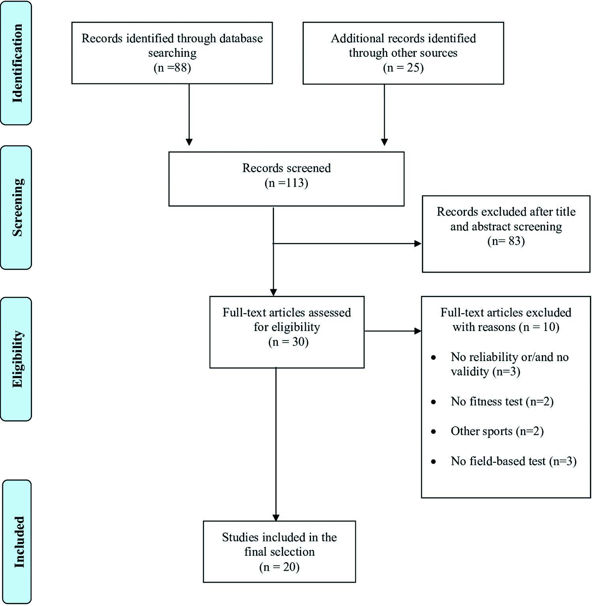

基于裁判员场地体能测试的研究综述
Sara Bouzas-Rico, Vicente De Dios-Álvarez, David Suárez-Iglesias and Carlos Ayán-Pérez
摘要：This systematic review was aimed at identifying the psychometric properties of field-based tests for assessing physical fitness in soccer referees. Electronic databases were searched up to May 2020 for studies that informed about the reliability and/or validity of at least one field-based physical fitness test for soccer referees. A total of 13 studies analysed the psychometric properties of the field-based physical fitness tests proposed by the Fédération Internationale de Football Association (FIFA) (aerobic endurance, n = 8; anaerobic endurance, n = 3; and speed, n = 8), while seven investigations focused on field-based physical fitness tests specifically designed for assessing aerobic endurance (n = 1) or change of direction (COD) (n = 6). According to the observed reliability and validity values, the Assistant Referee Intermittent Endurance test (ARIET), the 50-m sprint test and the Modified Agility test (MAT) seem, respectively, the best available options for assessing aerobic endurance, speed, and COD in soccer referees. Future investigations should consider the lack of research focusing on assistant and female referees. Further studies on the psychometric properties of anaerobic endurance and short distance speed tests are also needed.
关键词：效度；可靠性；测试；裁判员；足球
引言
The ongoing evolution and improvement of the physical preparation of soccer players (Gonaus et al., 2019; Milanovic et al., 2017) have resulted in an increase in their physical load during matches (Wallace & Norton, 2014). This has had an impact on the physical requirements imposed on the referees (Ai et al., 2020). Research into activity profiles and physiological demands of professional soccer referees during competitive matches showed that soccer refereeing is a challenging exercise (Cerqueira et al., 2011). In fact, during a match, the physiological stresses imposed on the referees are similar to those of the midfielders (D’Ottavio & Castagna, 2002), and may even be higher than those of some players (Castillo, Yanci et al., 2016). At higher competitive levels, the pace of the match is faster, which may increase the physiological demands of refereeing (Stølen et al., 2005).
In addition to the physical requirements, the most important aspect for the referees is the decision-making process. Throughout the match, an elite field referee (FR) makes some 137 observable and 200 unobservable decisions. When considering 56% effective playing time, the latter represents between 3 and 4 decisions per minute, of which almost two thirds are taken together by the referee team (Helsen & Bultynck, 2004). Therefore, it is essential for the FRs and assistant referees (ARs) to possess a well-developed physical fitness that allows them to cope with the match demands, and being in the most ideal place (i.e., field of vision of each match) to make the correct decisions.
Consequently, there is a clear need to ensure the referee team has adequate levels of physical fitness. While laboratory tests are used to evaluate fitness dimensions in standardized conditions (i.e., treadmill incremental tests), the variability in energy systems, muscle groups and motor skills that the performance of intermittent sports demands are very difficult to replicate in this environment (Giacomo, 2019). Indeed, it has been suggested that laboratory tests do not use appropriate match-stimulation protocols, and therefore their relation to soccer match performance may not be accurate (Castagna et al., 2007; O’Reilly & Wong, 2012). On a final note, the performance of laboratory tests is constrained by the fact that they require high-cost material resources and must be administered by highly trained evaluators.
For all these reasons, it is essential to consider the use of field-based tests, which transfer the assessment to a more realistic environment (Chamari et al., 2004). Also, they are cheaper, they do not need such extensive training for administrators, they can be done in a single session, and they are more motivating for participants. As a result of these features, refereeing international governing bodies, such as the Fédération Internationale de Football Association (FIFA), the Union of European Football Associations (UEFA), as well as several of the main national federations, evaluated systematically the physical fitness of their affiliated referees through field-based tests (Weston et al., 2012).
Much of the research on the suitability and applicability of field-based physical fitness tests for soccer has focused on players rather than referees. Despite the similarities in overall physiological demands between the two, there are various differentiating aspects of referees’ physical performance (Castillo, Yanci et al., 2016). For example, referees are usually older than the players, they are not exposed to the same degree of physical training, they do not interact with the ball during the match, and they cannot be substituted (Casajús & Castagna, 2007). Therefore, it is important to verify the psychometric properties (especially reliability and validity) of the field-based physical fitness tests that are specific to soccer refereeing.
The physiological characteristics of soccer referees have received increasing attention in the scientific literature over the past two decades, with several investigations reviewing anthropometric and physiological reference profiles, movement patterns, and physiological loads experienced during matches (Barbero-Álvarez et al., 2012; Castillo, Yanci et al., 2016; Krustrup & Bangsbo, 2001; Weston & Brewer, 2002). Yet, according to the authors’ knowledge, there is no review that collects and analyses the evidence focused on evaluating the psychometric properties of the field-based tests used to quantify these physiological solicitations in this group.
In short, a general and recent description of the psychometric properties of field-based physical fitness tests created specifically for soccer referees, obtained through systematic and critical analysis, is not available. Under these circumstances, the objective of this study is to carry out a comprehensive review of the scientific evidence about the reliability and validity of field-based tests for assessing physical fitness in soccer referees.
研究对象与研究方法
研究设计与流程
A systematic review was performed to analyse or inform about the reliability and/or validity of field-based tests designed to assess physical fitness in soccer referees.
样本收集
An evidence-based search for peer-reviewed studies was performed in the PubMed database without time limits throughout the period that goes from February 2020 to May 2020. The following search strategy and keywords were used: [“Football” OR “Soccer”] AND [“Reliability”] AND [“Validity”] AND [“Test” OR “Fitness test”]. To be selected for further analysis, the studies had to meet the following selection criteria: (i) to inform about the reliability and/or validity of at least one field-based physical fitness test when performed by referees and (ii) to be published in a scientific indexed peer-reviewed scientific journal. Among the exclusion criteria were the following ones: (i) limiting access to either the abstract or the full text of paper, (ii) studies investigating other football codes (American football, Australian football, indoor soccer) rather than soccer, (iii) using a language different from Spanish, Portuguese or English.
样本过滤
One author examined titles and abstracts identified during the search. If the information provided by the title and abstract suggested that the study met the selection criteria, the full text was examined. Doubts about inclusions were discussed with a second author until a consensus was reached.
数据提取
The authors of this review evaluated all included studies. General information about the title of the study, authors, journal, and publication details were extracted. They also gathered data concerning characteristics of the participants’ age and sex (when these data were reported), soccer fitness test performed, and information related to their reliability and/or validity (the population with which they were tested, the method to identify them, and the type of statistical analysis and its coefficients). Discrepancies were resolved by a second author. The bibliography in all selected studies was analysed in search of new evidence.
研究结果
A total of 113 studies were initially obtained. After removal of duplicate results, and those not related to the main aim of this review, 30 investigations were selected. After reading their full texts, 20 studies about the psychometric properties of field-based physical fitness tests in soccer referees were finally included for a complete analysis (Figure 1).
 Figure 1. Flowchart of the search and selection process for inclusion of studies.
设计与样本
Sample sizes ranged from 11 to 2459 FRs and ARs. Participants were elite officials in nine studies, amateur or sub-elite officials in four studies, and both elite and sub-elite in seven studies. None of the selected studies included female referees. A total of 13 studies (Table 1) analysed the psychometric properties of the physical fitness field-based tests proposed by FIFA (aerobic endurance, n = 8; anaerobic endurance, n = 3; and speed, n = 8), while seven investigations (Table 2) focused on physical fitness field-based tests specifically designed for assessing aerobic endurance (n = 1) or change of direction (COD) (n = 6).
Table 1. Included studies assessing FIFA field-based tests for referees.
Table 2. Included studies assessing physical fitness field-based tests for referees.
国际足联体能测试
Aerobic endurance
Psychometric properties of two different aerobic endurance tests were assessed in eight studies. The evaluated tests were the Yo-Yo Intermittent Recovery Level 1 (YYIR1) and the 12 Minutes Running test (12MRT). Two studies assessed their reliability, where the YYIR1 exhibited a high relative reliability (<5% as percent coefficient of variation -%CV-) (Krustrup & Bangsbo, 2001), while the 12MRT showed a high absolute reliability (1.7%CV) (Castagna, Abt, D’Ottavio et al., 2005). Besides, six studies (Castagna et al., 2002; Castagna, Abt, et al., 2005; Krustrup & Bangsbo, 2001; Mallo et al., 2007; Sánchez-García et al., 2018), four studies (Casajús & Castagna, 2007; Bartha et al., 2009; Castagna, Abt, D’Ottavio et al., 2005, 2005) and one study (Casajús & Castgan, 2007) evaluated convergent, construct, and criterion validities, respectively. Convergent validity ranged from 0.40 (YYIR1 vs 40 m sprint) to 0.77 (YYIR1 vs 12MRT). Regarding construct validity, YYIR1 and 12MRT were valid to discriminate between elite and sub-elite referees (p < 0.05). Criterion validity was 0.46 for 12MRT vs VO2max.
Anaerobic tests
Three studies assessed the psychometric properties of anaerobic tests. Two repeated sprint ability tests (6×40m and 5×30m) and one Interval test were used to assess anaerobic endurance fitness. All the studies were exclusively focused on convergent validity, which ranged from 0.38 (HR interval vs HR match) to 0.77 (6×40m vs high-intensity running and sprint during match) (Mallo et al., 2009; Meckel et al., 2020; Weston et al., 2009) and construct validity, where the 6×40m test was valid to detect changes between referees’ level.
Speed tests
Referees’ performance (i.e., sprint time) was measured in eight studies by means of five different tests: 5-m sprint, 10-m sprint, 30-m sprint, 50-m sprint and 200-m sprint. Only one study determined absolute reliability (50-m sprint test, 0.9%CV; 200-m sprint test, 1.1%CV) (Castagna, Abt, et al., 2005). In the five studies analysing convergent validity (Castagna et al., 2002; Mallo et al., 2007; Muniroglu & Subak, 2018a, 2018b; Sánchez-García et al., 2018) the values ranged from 0.35 (5-m sprint test vs Arrowhead test) to 0.84 (5-m sprint test vs 30-m sprint test). Three studies analysed construct validity (Casajús & Castagna, 2007; Bartha et al., 2009; Castagna, Abt, et al., 2005) and showed that the 50-m sprint test and the 200-m sprint test were valid to discriminate the referees’ level and age (p < 0.05).
Change of Direction tests
Two studies assessed the psychometric properties of three different COD tests, including the T-test, Arrowhead test and Illinois test. None of them provided information about reliability. However, both studies (Muniroglu & Subak, 2018a, 2018b) reported criterion validity, which ranged from 0.22 (T-test vs 10-m sprint test) to 0.79 (Arrowhead test vs Illinois test).
其它体能测试
Cardiorespiratory fitness tests
One study (Castagna et al., 2012) examined the Assistant Referee Intermittent Endurance test (ARIET) in terms of relative reliability, with a high intraclass correlation coefficient (ICC) of 0.98; absolute reliability (4.3%CV); criterion validity (0.78, ARIET vs VO2max); convergent validity (0.95, ARIET vs YYIE1); and construct validity, showing that the ARIET was able to discriminate between assistant referees of different competitive levels (p < 0.05).
Change of Direction tests
Six studies analysed the psychometric properties of five different COD tests, including the Modified Agility T-test Free (MATF), the Change of Direction Ability (CODA) test, the Modified Agility test (MAT), the 10-8-8-10 test and the New Football Referees test (New FR test). Two studies analysed reliability (Castagna et al., 2011; Yanci et al., 2016). They reported a relative reliability (ICC) of 0.89 and 0.90 for MAT and 10-8-8-10 test, respectively, whereas the absolute reliability, which was assessed by means of TEM, showed a 4.23%CV for MAT and 0.21%CV for 10-8-8-10 test.
On the other hand, all the studies (Castagna et al., 2011; Castillo, Cámara, et al., 2016; Castillo et al., 2019; Harley et al., 2001; Riiser et al., 2018; Yanci et al., 2016) informed about the tests’ validity. Convergent validity ranged from 0.61 (MAT) to 0.82 (New FR test). Regarding the construct validity, the MAT and the 10-8-8-10 test were valid to discriminate between referees’ levels, while the MATF test showed a significant association with referees’ age. Likewise, the MATF showed to be able to detect changes in test performance by age, with the younger referees achieving lower execution times than their older counterparts (p < 0.05).
研究讨论
The purpose of this systematic review was to critically analyse the available evidence about the validity and reliability of field-based tests used for fitness in soccer referees. In accordance with the obtained results, it seems that aerobic endurance can be accurately assessed by means of these tests, while there is a lack of information regarding the psychometric properties of anaerobic endurance and short distance sprint tests. In addition, no field-based tests for assessing decision-making skills were found. These findings can help major international and national institutions make better decisions about the degree to which their affiliated referees are prepared to lead matches and improve refereeing programmes to rotate those who retire due to their age (Weston et al., 2012).
The first finding of interest is that the majority of studies found focused on evaluating the psychometric properties of tests that measured the aerobic endurance, speed and COD of the referees. No study analysed the validity and reliability of physical-cognitive tests in which correct decisions must be made under a high level of fatigue. This is a very notable deficiency in the current evidence, given that the referees usually reach their best refereeing level at an average age of over 35 years, from which the fitness status decreases. Conversely, from that age on, their decision-making quality rises, allowing them to save on physical effort without jeopardizing their performance during the match (Castillo, Cámara, et al., 2016). Hence, there is a need for valid and reliable tests for referees that involve decision-making under high fatigue conditions. In this way, both cognitive and physical fitness of the referee are demanded simultaneously and may compensate each other depending on the referee’s age, as it similarly occurs in elite soccer players (Guerra et al., 2019).
Regarding anaerobic endurance tests, only two (ARIET and 12MRT) were subjected to criterion validity, with good results. Both also obtained good results regarding absolute reliability. Therefore, both seem advisable to assess this ability. Nonetheless, the 12MRT is a continuous test, so it does not adequately re&ect the intermittent profile of a match (Krustrup & Bangsbo, 2001). In fact, in 2005, FIFA removed this test from its test battery to replace it with an intermittent one (FIFA, 2016). Therefore, the only test that can be recommended based on the results obtained is the ARIET. However, more research is required in this regard since only one study evaluated the psychometric properties of this test.
Although aerobic endurance is widely recognized as essential for soccer referees to be successful, the ability to perform high intensity and anaerobic activities interspersed with less intense and aerobic efforts, represents a decisive factor in order to keep up with the matches (Weston et al., 2012). Consequently, anaerobic endurance tests with sufficient validity and reliability are required. In this review, three tests for assessing this fitness dimension were found, and all of them were based on the performance of repeated sprints. These kinds of tests were introduced in the FIFA test battery in 2016, and they have shown high convergent and construct validity values. Besides, these tests seem to be accurate, as they best fit, the real physical fitness demands of the referees. Nevertheless, it should be noted that further research is needed to determine their reliability and criterion validity before establishing a solid recommendation on their use.
Speed is a necessary capacity for refereeing in elite soccer since the referee performs between 21 and 30 sprints per match to locate and evaluate the play correctly (Casajús & Castagna, 2007; Weston et al., 2012), which makes it necessary to have speed tests with high psychometric properties. The evaluated tests used different distances (between 5 and 200 metres), so there are important differences regarding the evaluated speed phase (Castillo, Cámara et al., 2016). Only the 50-m sprint test and the 20-m sprint test evaluated reliability, reporting high absolute reliability values. No test was subjected to criterion validity, while, in general, the tests reported adequate levels of construct or convergent validity. Taking these results into account, and knowing that in 90% of the cases, the players perform sprints of less than 5 seconds and less than 30 metres (Castillo, Cámara et al., 2016), it is probable that the shorter distance tests have a greater content validity. Based on this assumption and considering the psychometric properties of the sprint tests analysed in this review, it could be thought that the 50-m sprint test may be the most suitable for evaluating speed in soccer referees mainly for two reasons. Firstly, although 50 metres is a longer distance than that usually covered by players during a match, it is still one of the shortest distances analysed within the studies included in this review. Secondly, the 50-m test was the only speed test, alongside the 200-m test, that showed absolute reliability, as well as high convergent and construct validity values. However, the utility of the 50-m test has been called into question, since it has been suggested that it appears to be a poor predictor of referees’ physical performance during competitive matches (Mallo et al., 2007). Thus, further studies are needed to confirm the reliability and validity of shorter distance speed tests.
In today’s football, referees change their driving pattern every 5–6 seconds (Krustrup & Bangsbo, 2001), so it is important to have valid and reliable tests measuring COD. Only the 10-8-8-10 test and the MAT were subjected to analysis, reporting high values in absolute and relative terms. Moreover, these two tests showed the ability to discriminate according to the referee level and/or the age of the referee. Criterion validity was not evaluated in any case. It should be noted that all the tests evaluated the physical component of agility (i.e., COD ability defined as a movement where no immediate reaction to a stimulus is required and is considered pre-planned in nature). This is an aspect to take into account since, in open motor contexts, it has been identified that, while the physical component of agility allows to overcome situations in which the movement pattern can be predefined (Sisic et al., 2016), the cognitive component of agility determines changes in direction when the individual has to react to an external stimulus (Scanlan et al., 2015; Trecroci et al., 2019). Therefore, the tests that evaluate the physical component of agility could be more suitable for the ARs, with the MAT being the most recommended due to its levels of absolute and relative reliability and convergence and construct validity. More research on testing the cognitive components of agility is needed to have valid evidence and reliability for the FRs.
The main strength of this work is the fact that, according to the authors’ knowledge, this is the first review focused on the analysis of the psychometric properties of tests designed for soccer referees. Therefore, the conclusions of this work can be very useful for professionals who evaluate the fitness of referees, as well as for coaches dedicated to their physical preparation.
There are some inherent limitations that should be taken into account. Firstly, most studies did not report on the criterion validity, and since this is the only objective measure of validity, the results obtained should be interpreted considering this aspect (Currell & Jeukendrup, 2008). Moreover, the studies analysed were carried out mainly with professional referees from European leagues. Refereeing at a higher competitive level raises the kinematic demands of the referees to keep up with the match. In this sense, the teams’ playing style and level are in&uenced by each country’s specific context. Thus, depending on the league that the referee officiates in, the physical and physiological demands differ (Barbero-Álvarez et al., 2012). Therefore, it is likely that the results obtained cannot be extrapolated to non-European and/or lower-level leagues. Furthermore, research on ARs is sparse. This limits any generalization given that their physiological demands are different with respect to the FR (i.e., less total distance and high intensity running, less decisional challenges, more demand for physical factors vs cognitive factors of agility) (Mallo et al., 2009; Weston et al., 2012). Therefore, more research is needed on those tests that measure fitness levels according to the physical demands of the ARs. In addition, no study evaluated the tests on a female sample, and the results obtained cannot be applied to the female sex due to the important physiological differences between the sexes that in&uence sports performance and the different reference values for women in physical fitness field-based tests (Hunter, 2016; Lundsgaard & Kiens, 2014; Schmitz et al., 2018). Finally, the main methodological limitation of this review is the potential risk that the reviewed evidence is not complete due to language restrictions or the fact that we did not include grey literature in the search.
结论
After revising the existing evidence, we suggest using the ARIET, the 50-m sprint test and the MAT to assess cardiorespiratory fitness, speed, and COD in referees. The obtained results indicate that there is a lack of research focused on assistant and female referees, as well as on the psychometric properties of anaerobic endurance tests. This is a scientific gap that should be addressed in future studies.
参考文献
-
Ai, K., Oldrich, R., Tan, H., & Xu, P. (2020). Sustainable innovation in football referee training in Czech Republic. Sustainability, 12(7), 2821. https://doi.org/10.3390/su12072821
-
Barbero-Álvarez, J. C., Boullosa, D. A., Nakamura, F. Y., Andrín, G., & Castagna, C. (2012). Physical and physiological demands of field and assistant soccer referees during America’s cup. Journal of Strength and Conditioning Research, 26(5), 1383–1388. https://doi.org/10.1519/JSC.0b013e31825183c5
-
Bartha, C., Petridis, L., Hamar, P., Puhl, S., & Castagna, C. (2009). Fitness test results of Hungarian and international-level soccer referees and assistants. Journal of Strength and Conditioning Research, 23(1), 121–126. https://doi.org/10.1519/JSC.0b013e31818ebb84
-
Casajús, J. A., & Castagna, C. (2007). Aerobic fitness and field test performance in elite Spanish soccer referees of different ages. Journal of Science and Medicine in Sport, 10(6), 382–389. https://doi.org/10.1016/j.jsams.2006.08.004
-
Castagna, C., Abt, G., & D’Ottavio, S. (2002). Relation between fitness tests and match performance in elite Italian soccer referees. Journal of Strength and Conditioning Research, 16(2), 231–235. <https://doi.org/10.1519/1533-4287(2002)016<0231>
-
Castagna, C., Abt, G., & D’Ottavio, S. (2005). Competitive-level differences in Yo-Yo intermittent recovery and twelve minute run test performance in soccer referees. Journal of Strength and Conditioning Research, 26(5), 805–809. https://doi.org/10.1519/R-14473.1
-
Castagna, C., Abt, G., & D’Ottavio, S. (2007). Physiological aspects of soccer refereeing performance and training. Sports Medicine, 37(7), 625–646. https://doi.org/10.2165/00007256-200737070-00006
-
Castagna, C., Abt, G., D’Ottavio, S., & Weston, M. (2005). Age-related effects on fitness performance in elite-level soccer referees. Journal of Strength and Conditioning Research, 19(4), 785–790. https://doi.org/10.1519/R-14984.1
-
Castagna, C., Bendiksen, M., Impellizzeri, F. M., & Krustrup, P. (2012). Reliability, sensitivity and validity of the assistant referee intermittent endurance test (ARIET) – A modified Yo-Yo IE2 test for elite soccer assistant referees. Journal of Sports Sciences, 30(8), 767–775. https://doi.org/10.1080/02640414.2012.668705
-
Castagna, C., Impellizzeri, F. M., Bizzini, M., Weston, M., & Manzi, V. (2011). Applicability of a change of direction ability field test in soccer assistant referees. Journal of Strength and Conditioning Research, 25(3), 860–866. https://doi.org/10.1519/JSC.0b013e318208ae8e
-
Castillo, D., Cámara, J., Castellano, J., & Yanci, J. (2016). Football match officials do not attain maximal sprinting speed during matches. Kinesiology, 48(2), 207–212. https://doi.org/10.26582/k.48.2.10
-
Castillo, D., Cámara, J., Lozano, D., Berzosa, C., & Yanci, J. (2019). The association between physical performance and match-play activities of field and assistants soccer referees. Research in Sports Medicine, 27(3), 283–297. https://doi.org/10.1080/15438627.2018.1534117
-
Castillo, D., Yanci, J., Casajús, J. A., & Cámara, J. (2016). Physical fitness and physiological characteristics of soccer referees. Science & Sports, 31(1), 27–35. https://doi.org/10.1016/j.scispo.2015.11.003
-
Cerqueira, M. S., Da Silva, A. I., & Marins, J. C. B. (2011). Análise do modelo de avaliação física aplicado aos árbitros de futebol pela FIFA. Revista Brasileira Medicina Do Esporte, 17(6), 425–430. https://doi.org/10.1590/S1517-86922011000600012
-
Chamari, K., Hachana, Y., Ahmed, Y. B., Galy, O., Sghaïer, F., Chatard, J. C., Hue, O., & Wisloff, U. (2004). Field and laboratory testing in young elite soccer players. British Journal of Sports Medicine, 38(2), 191–196. https://doi.org/10.1136/bjsm.2002.004374
-
Currell, K., & Jeukendrup, A. E. (2008). Validity, reliability and sensitivity of measures of sporting performance. Sports Medicine, 38(4), 297–316. https://doi.org/10.2165/00007256-200838040-00003
-
D’Ottavio, S., & Castagna, C. (2002). Analysis of match activities in elite soccer referees during actual match play. Journal of Strength and Conditioning Research, 15(2), 167–171. https://doi.org/10.1519/00124278-200105000-00003
-
FIFA. Fitness test for referees (men & women) [Internet]. 2016. Available from: https://footballwest.com.au/wp-content/uploads/2016/12/FIFA-Fitness-Tests-for-Referees-version-2016.pdf
-
Giacomo, G., Ellenbecker, T. S., & Kibler, W. B. (Eds.). (2019). Tennis Medicine: A Complete Guide to Evaluation, Treatment, and Rehabilitation. Springer.
-
Gonaus, C., Birklbauer, J., Lindinger, S. J., Stöggl, T. L., & Müller, E. (2019). Changes over a decade in anthropometry and fitness of elite Austrian youth soccer players. Frontiers in Physiology, 10, 333. https://doi.org/10.3389/fphys.2019.00333
-
Guerra, S. D. R., Rey, E., A., Kalén, A., & Lago-Peñas, C. (2019). Age-related physical and technical match performance changes in elite soccer players. Scandinavian Journal of Medicine & Science in Sports, 29(9), 1421–1427. https://doi.org/10.1111/sms.13463
-
Harley, R., Banks, R., & Doust, J. (2001). The development and evaluation of a task specific fitness test for association football referees. In W. Spinks, T. Reilly, & A. Murphy (Eds.), Science and football IV (pp. 76–80). Routledge.
-
Helsen, W., & Bultynck, J. B. (2004). Physical and perceptual-cognitive demands of top-class referee ing in association football. Journal of Sports Sciences, 22(2), 179–189. https://doi.org/10.1080/02640410310001641502
-
Hunter, S. K. (2016). The relevance of sex differences in performance fatigability. Medicine and Science in Sports and Exercise, 48(11), 2247–2256. https://doi.org/10.1249/MSS.0000000000000928
-
Krustrup, P., & Bangsbo, J. (2001). Physiological demands of top-class soccer refereeing in relation to physical capacity: Effect of intense intermittent exercise training. Journal of Sports Sciences, 19(11), 881–891. https://doi.org/10.1080/026404101753113831
-
Lundsgaard, A. M., & Kiens, B. (2014). Gender differences in skeletal muscle substrate metabolism - molecular mechanisms and insulin sensitivity. Frontiers in Endocrinology, 5, 195. https://doi.org/10.3389/fendo.2014.00195
-
Mallo, J., Navarro, E., Aranda, J. M. G., & Helsen, W. (2009). Activity profile of top-class association football referees in relation to fitness-test performance and match standard. Journal of Sports Sciences, 27(1), 9–17. https://doi.org/10.1080/02640410802298227
-
Mallo, J., Navarro, E., García-Aranda, J. M., Gilis, B., & Helsen, W. (2007). Activity profile of top-class association football referees in relation to performance in selected physical tests. Journal of Sports Sciences, 25(7), 805–813. https://doi.org/10.1080/02640410600778602
-
Meckel, Y., Balikin, K., & Eliakim, A. (2020). Pre- and mid-season repeated sprint ability of soccer referees from the first and second divisions. International Journal of Sports Science & Coaching, 15(1), 82–90. https://doi.org/10.1177/1747954119887301
-
Milanović, Z., Sporiš, G., James, N., Trajković, N., Ignjatović, A., Sarmento, H., Trecroci, A., & Mendes, B. M. B. (2017). Physiological demands, morphological characteristics, physical abilities and injuries of female soccer players. Journal of Human Kinetics, 28(60), 77–83. https://doi.org/10.1515/hukin-2017-0091
-
Muniroglu, S., & Subak, E. (2018a). A modified T-Test for football referees to test agility, quickness and sprint performances. Journal of Education and Training Studies, 6(5), 10–15. https://doi.org/10.11114/jets.v6i5.3131
-
Muniroglu, S., & Subak, E. (2018b). A comparison of 5, 10, 30 meters sprint, modified T-Test, Arrowhead and Illinois agility tests on football referees. Journal of Education and Training Studies, 6(8), 70–76. https://doi.org/10.11114/jets.v6i8.3360
-
O’Reilly, J., & Wong, S. H. S. (2012). The development of aerobic and skill assessment in soccer. Sports Medicine, 42(12), 1029–1040. https://doi.org/10.2165/11635120-000000000-00000
-
Riiser, A., Andersen, V., Castagna, C., Pettersen, S. A., Saeterbakken, A., Froyd, C., Ylvisaker, E., Naess Kjosnes, T., & Fusche Moe, V. (2018). The construct validity of the CODA and repeated sprint ability tests in football referees. International Journal of Sports Medicine, 39(8), 619–624. https://doi.org/10.1055/a-0577-4073
-
Sánchez-García, M., Sánchez-Sánchez, J., Rodríguez-Fernández, A., Solano, D., & Castillo, D. (2018). Relationships between sprint ability and endurance capacity in soccer referees. Sports, 6(2), 28. https://doi.org/10.3390/sports6020028
-
Scanlan, A. T., Tucker, P. S., & Dalbo, V. J. (2015). The importance of open- and closed-skill agility for team selection of adult male basketball players. The Journal of Sports Medicine and Physical Fitness, 55(5), 390–396.
-
Schmitz, B., Pfeifer, C., Kreitz, K., Borowski, M., Faldum, A., & Brand, S. M. (2018). The Yo-Yo intermittent tests: A systematic review and structured compendium of test results. Frontiers in Physiology, 9, 870. https://doi.org/10.3389/fphys.2018.00870
-
Sisic, N., Jelicic, M., Pehar, M., Spasic, M., & Sekulic, D. (2016). Agility performance in high-level junior basketball players: The predictive value of anthropometrics and power qualities. The Journal of Sports Medicine and Physical Fitness, 56(7–8), 884–893.
-
Stølen, T., Chamari, K., Castagna, C., & Wisløff, U. (2005). Physiology of soccer: An update. Sports Medicine, 35(6), 501–536. https://doi.org/10.2165/00007256-200535060-00004
-
Trecroci, A., Longo, S., Perri, E., Iaia, F. M., & Alberti, G. (2019). Field-based physical performance of elite and sub-elite middle-adolescent soccer players. Research in Sports Medicine, 27(1), 60–71. https://doi.org/10.1080/15438627.2018.1504217
-
Wallace, J. L., & Norton, K. I. (2014). Evolution of World Cup soccer final games 1966-2010: Game structure, speed and play patterns. Journal of Science and Medicine in Sport, 17(2), 223–228. https://doi.org/10.1016/j.jsams.2013.03.016
-
Weston, M., & Brewer, J. (2002). A study of the physiological demands of soccer refereeing. Journal of Sports Sciences, 20(1), 59–60. https://doi.org/10.1080/026404102317126164
-
Weston, M., Castagna, C., Helsen, W., & Impellizzeri, F. (2009). Relationships among field-test measures and physical match performance in elite-standard soccer referees. Journal of Sports Sciences, 27(11), 1177–1184. https://doi.org/10.1080/02640410903110982
-
Weston, M., Castagna, C., Impellizzeri, F. M., Bizzini, M., Williams, A. M., & Gregson, W. (2012). Science and medicine applied to soccer refereeing: An update. Sports Medicine, 42(7), 615–631. https://doi.org/10.2165/11632360-000000000-00000
-
Yanci, J., Los Arcos, A., Grande, I., & Casajús, J. A. (2016). Change of direction ability test differentiates higher level and lower level soccer referees. Biology of Sport, 33(2), 173–177. https://doi.org/10.5604/20831862.1198637